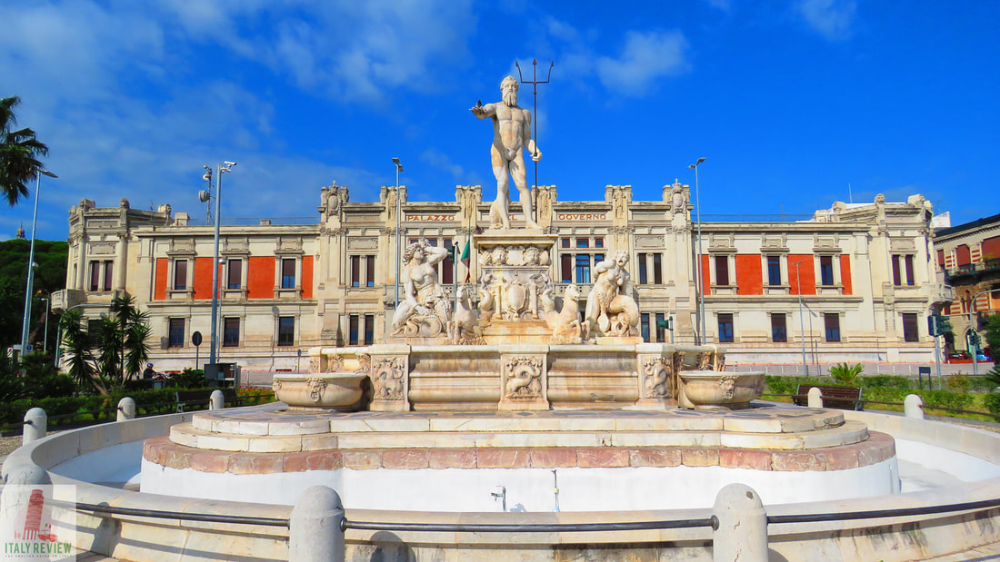
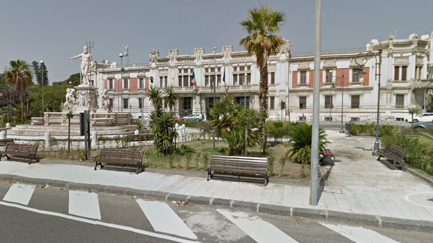
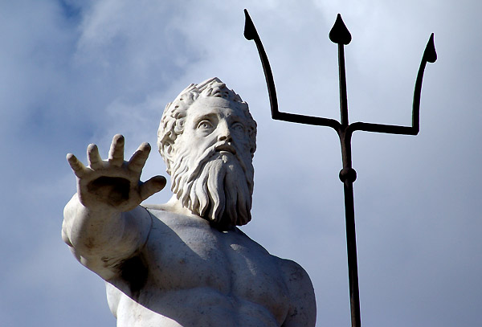
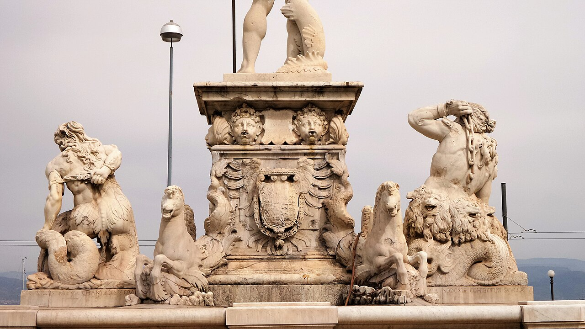

La piazza principale di Messina è Piazza Unità d’Italia dominata dalla monumentale Fontana del Nettuno che celebra il legame indissolubile tra la città e lo Stretto. La leggenda vuole che il dio del mare, colpito dalla bellezza della posizione di Messina, abbia deciso di placare le furie dei mostri Scilla e Cariddi proprio davanti alle sue rive per proteggere i naviganti.
Piazza Unità d'Italia è la piazza principale di Messina, situata nel cuore della città. Essa rappresenta un importante punto di riferimento per i messinesi. La piazza è circondata da edifici storici e monumenti, tra cui il Palazzo Zanca, sede del Comune di Messina,e il Palazzo della Pretura costruito nel 1920, che domina tutta la piazza. Al centro della piazza si trova una grande fontana, la Fontana di Nettuno, che rappresenta il dio del mare con un tridente in mano mentre fa ritorno al suo regno dopo aver sconfitto i mostri Scilla e Cariddi e aver annunciato al popolo messinese la fine dei tormenti dello Stretto. La piazza è un luogo di incontro per i cittadini e ospita spesso eventi culturali, manifestazioni e celebrazioni. Inoltre, offre una vista panoramica sullo Stretto di Messina e sulle montagne circostanti, rendendola una meta turistica popolare per chi visita la città.


In tempi antichi, lo Stretto di Messina era considerato un mare tutt’altro che ospitale per i naviganti, anzi attraversare le sue acque significava affrontare la morte. Infatti proprio le sue bizzarre correnti, erano sovente causa di naufragi e disastri. La sua storia, avvolta nel mistero, ispirò il mito omerico di Scilla e Cariddi, due orrendi mostri marini che ne infestavano le coste e distruggevano le navi dei marinai.
L’ira di queste due creature era motivo di terrore e sconforto da parte degli abitanti della Sicilia e della Calabria, anche perché nessuno riusciva a sconfiggerli e solo l’intervento del Dio Nettuno pose fine a questo dramma, incatenandoli e sottomettendoli, così come si narra e come si può constatare ammirando la maestosa “Fontana del Nettuno” collocata oggi in Piazza Unità d’Italia, proprio di fronte al Palazzo della Prefettura della città.

Scansiona il codice QR per raggiungere Piazza Unità d'Italia.